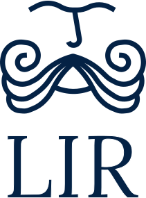
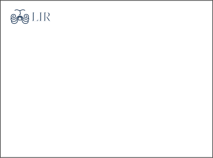
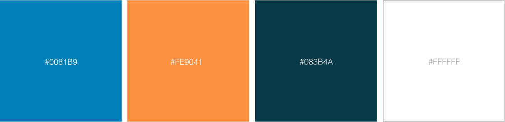
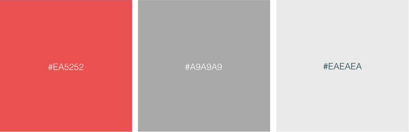
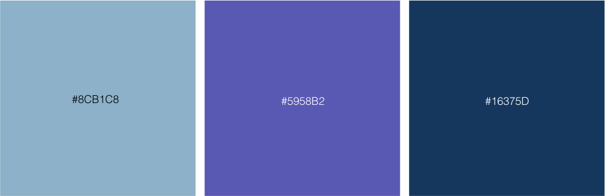
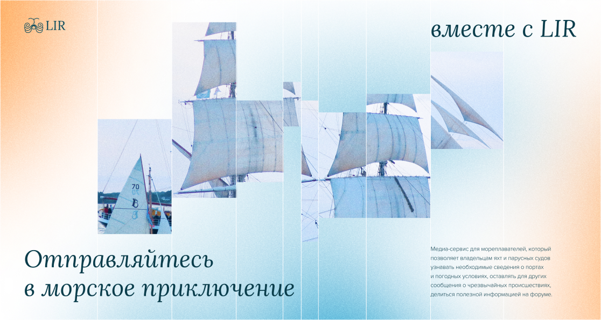
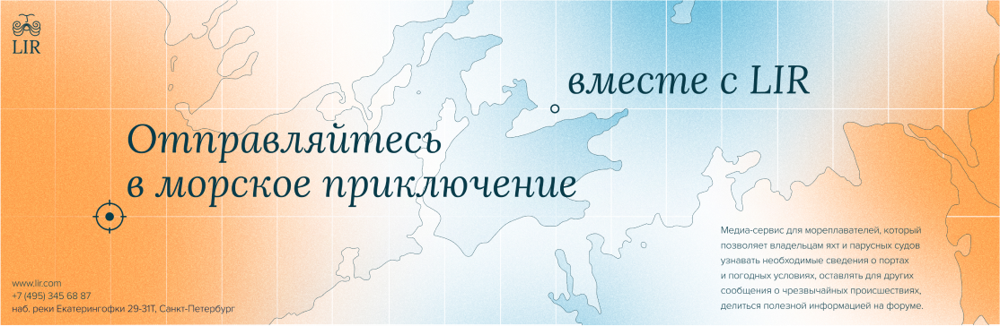
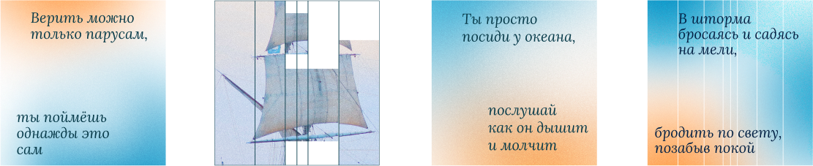
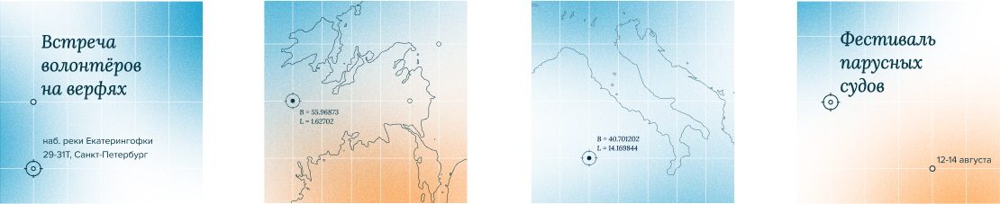

условные обозначения:
Лого
Цвета
Типографика
Композиция
Фото
Графика
Tone of voice
Носители
медиасервис для мореплавателей
стайлгайд
О бренде
Бренд зиждется на эстетике контурных карт и морских путешествий. Стиль говорит на языке амбивалентных визуальных метафор: непокорной свободолюбивой стихии и надёжности, очерченной параллелями и меридианами. Медиасервис превращает любую пугающую неизвестность на пути, будь то закрытый порт или водоворот, в безопасную и понятную карту, что отражено в сетке и графических элементах.
Семантика:
романтичный
творческий
душевный
достойный
инициативный
надёжный
спокойный
отзывчивый
самозабвенный
свободный
ответственный
Ценности:
Объединять людей из разных стран, страстно любящих путешествия по морям и океанам
Помогать морякам обмениваться полезной информацией, советами и новостями
Экономить время путешественников, предоставляя удобный и простой поиск информации о портах и происшествиях на море
Доверие и надёжность
Миссия:
Сделать путешествие по морю комфортным и безопасным
Лого
Характер:
Логотип отражает образ ирландского бога Лира, который олицетворяет собой морскую стихию. Усы персонажа напоминают морские волны. Согласно древним легендам, Лир является покровителем мореплавателей и указывает верный путь, что и является миссией нашего сервиса.
Смыслы:
Контуры знака повторяют формы пенистых гребней волн, ассоциирующихся со свободолюбивым добродушным нравом.
Брови, сведённые на переносице, говорят о Лире как об ответственной и надёжной личности.
Принципы:
Спокойствие и надёжность
Антиква
Свобода и романтика
Мифологический образ
Покровительство и благосклонность
Плавные линии
Построение и механика:
Охранное поле логотипа рассчитывается по модулю равному отступу между знаком и текстовым блоком.
Знак может находиться отдельно от названия
Использование:
На вертикальных носителях ставится вертикальный логотип по центру.
На горизонтальных носителях — горизонтальный, и помещается в верхний левый угол.
На квадратных носителях горизонтальный логотип располагается в нижнем правом углу.
Ограничения:
Непропорционально деформировать по ширине или высоте
Отражать по вертикали или горизонтали
Использовать как контейнер
Накладывать градиент
Переворачивать под каким-либо углом
Добавлять дополнительную графику
Помещать надпись слева
Помещать надпись сверху
Цвета
Выбор цвета:
Палитра навеяна неоднородностью моря, его приглушёнными манящими оттенками. От глубины, солёности и других параметров зависит цвет поверхности. В проливах, океанах и даже реках нередки резкие переходы от светлого к тёмному, от розоватого к синему. А метафора глубины — неизвестность, которую на протяжении многих веков боялись мореплаватели, воображая чудовищ в незнакомых водах. Цвет вобрал в себя всю романтику и загадочность, мистичность и очарование, которым окутано плавание. Медиасервис помогает развеивать страхи, сохраняя образ неземного мифологического пространства — моря.
Основные:
deep blue
pale blue
Дополнительные:
До наложения эффектов
niagara
purple blue
pearlescent night
После наложения эффектов
noise niagara
noise purple blue
noise pearlescent night
Соотношение:
Типографика
Гарнитуры:
Заголовки
Lora Regular
Подзаголовки
Lora Italic
Основной текст
Helvetica Light
На одном макете рекомендуется использовать не больше 3-х размеров текста
Сетка
2 типа:
Коллажные сетки, с нулевым средником. Совпадают по пропорциям при наложении.
«Модель водоворота»
«Параллели и меридианы»
Горизонтальные носители
Вертикальные носители
Принципы построения:
Вертикальные форматы:
«Модель водоворота»
«Параллели и меридианы»
Горизонтальные форматы:
«Модель водоворота»
«Параллели и меридианы»
Квадраты:
«Модель водоворота»
«Параллели и меридианы»
Фотографии:
Принципы расположения:
Фотографии ставятся по сетке «Модель водоворота».

Принципы подбора:
Тематика снимков морская: корабли, порты, океан, моряки. Все фотографии должны быть в чёрно-белой цветовой гамме.
Дополнительная графика

Tone of voice
Используйте глаголы в повелительном наклонении в коротких фразах, призывающих к действию, или душевные цитаты из песен про море. Обращайтесь на «ты» к брату-моряку и на «вы» к команде. Не бойтесь метафор и эпитетов.
Носители
Instagram:

YouTube:
Facebook:
Мерч:

Реклама в городе: